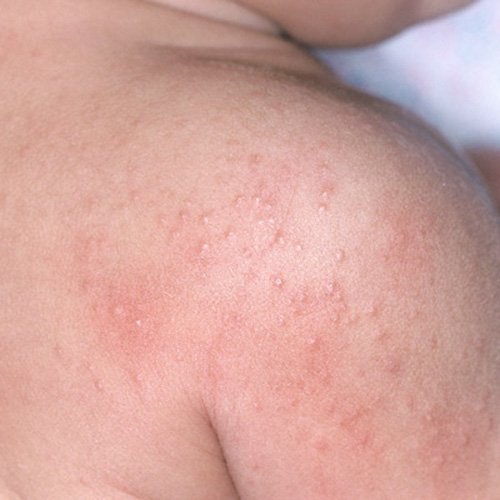
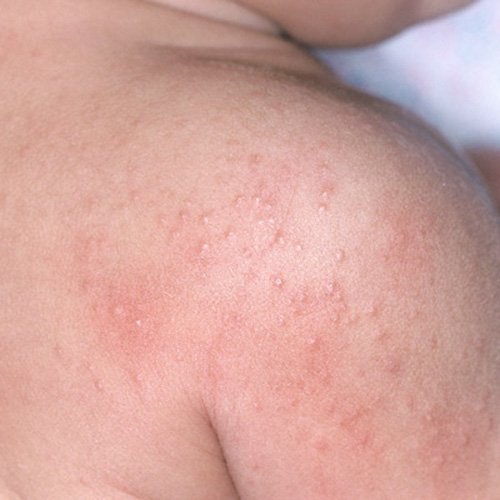

The dangers of swimming in lakes during times of high bacteria levels can be significan. Listening to the signs that are posted for your safety, and should be followed. These reactions can be extremely uncomfortable especially for children. The bacteria actually enters the body and creates a reaction! Being cautious is strongly advised! Safety is very important during those fun summer days!
 Listening to the Signs
Its a visious cycle!
No summer fun!

Listening to the Signs
Its a visious cycle!
No summer fun!

Summer is a time to enjoy the outdoors; cool down in the lake and pools! Drowning, sunburns, insect botes and becteria reactions are avoidable! Being safe and informed is what ensures it is the best summer for our little ones.